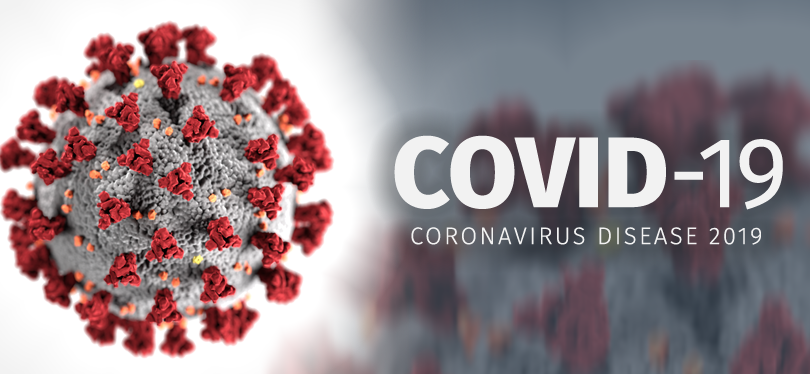

Where and when it all started
COVID-19  became a global pandemic in 2020, and reached Newfoundland on March 13, 2020. Newfoundland and the World went into lock down. All non-essential businesses were ordered to close and all recreational facilities were ordered to close. This left FKN PHIL home with his daughter, Emma, for the remainder of 2020.
As most of the world did, so did FKN PHIL, he went online. He dusted off his social media accounts and reconnected with 1 of his older passions, Poker. He made a deposit of $100 onto Pokerstars and he was ready to play. However, as he quickly found out, poker seemed to have changed. It wasn't like he remembered in 2005 or 2007 when he was on a poker cruise based in Italy. As he now found himself playing a game that he didnt have an edge in, he decided to look for answers.
Download Poker Stars here:
His quest for answers led him to many youtube channels, where poker training videos and discussions could be found quite abundantly. But it also led him to Evan Jarvis has a poker community and training packages he offers for free. FKN PHIL quickly started taking his training and joined the gripsed community. This new community led him to twitch.
Twitch is an American video live streaming service that focuses on video game live streaming, including broadcasts of esports competitions. In addition, it offers music broadcasts, creative content, and more recently, "in real life" streams.
Knowing that Emma had been wanting to have her own youtube channel, FKN PHIL decided to buy a new computer system, and become a streamer himself so he would know what to do for his daughter. He researched into what level of computer would be needed and what other hardware that is required to stream successfully.
The Resources Needed to get online
CAMERA
One of the 4 core components of any stream. FKN PHIL uses a 1080p digital camera for his stream. The web cam in your laptop or even the camera in your phone could be used as well.
The Logitech C922 is the top used camera by streamers today.
MICROPHONE

Having a high quality microphone is one of the most important pieces of hardware for your stream. FKN PHIL uses a condenser microphone on a swing arm for mobility.
STREAMING SOFTWARE
Also known as Open-Broadcast Software or OBS is needed to capture your inputs and display on stream. There are many options but FKN PHIL uses Stream Elements OBS, because he likes the features.
GOOD INTERNET
Having a good internet connection is paramount to delivering a quality stream to the viewers.
Lighting
Good lighting can be found next to windows or with lights. FKN PHIL uses 5k lights because they a natural white with a slight tint of yellow. This color is for ppl who have less natural white light.
Green Screen
Although not completely needed as there are software options available to chroma key your backgrounds and such. FKN PHIL uses a green screen to make the processing easier for his system.
FKN PHIL'S SYSTEM
- Intel Core i7-10700K @ 2.90GHz
- RAM 64.0 GB Dual-Channel @ 1463MHz
- NVIDIA GeForce GTX 1660 Ti 6GB
- 1 TB RAID SSD / 2 TB Seagate SATA
- 2 x 24inch hp monitors
- 1 55inch tv and 1 65inch tv
| Component | Info | Size | Speed |
|---|---|---|---|
| CPU | Intel core i7 | 10700K | 2900 MHz |
| RAM | Dual Channel | 65553MB | 1465 MHz |
| GRAPHICS | GeForce GTX 1660Ti | 6 GB | 6000MHz |
| SSD STORAGE | BC511 NVMe SK hynix | 1 TB | FAST LOL |
| SATA STORAGE | SeaGate | 2 TB | 7200 rpm |
System acquired and then...
So with all the hardware and computer system acquired FKN PHIL set up his stream. Since he had been playing in the Newfoundland Poker Group on PokerStars, he decided that he would stream himself playing that game daily. His initial followers came directly from the NLPT, but he was able to piggy back off Gripsed community and gain his followers and get his watch time quickly. Within 2 weeks FKN PHIL became a twitch affiliate.
And as he streamed everyday, he slowly became more confident and continuously learned new things. Today he has 300 followers on Twitch and grew the poker game from just its regular 12 to 14 nightly players to an average of 70+ players. Now his stream looks like this.
Currently attending an Accelerated Software Development course, poker and his stream have been put on hold, as he remains laser focused on being the top student in his class.
Follow and Connect with FKN PHIL
This is subscript and superscript